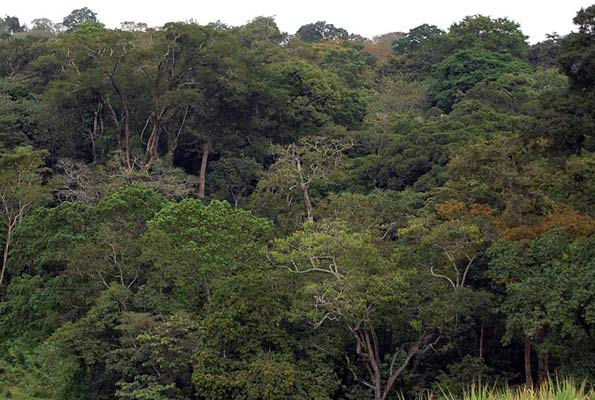

Forestry is the science and art of creating, managing, conserving, and repairing forests and associated resources to meet desired goals, and values for human and environmental benefits
FOREST STATUS IN UGANDA TODAY.
 Trees, forests and woodlands cover about 14% of Uganda’s land surface. Over the last 30–40 years, growth in human population and corresponding increase in demand for forest products for domestic and industrial use, expansion of agricultural land, illegal settlements and weak forest management capacity have adversely affected the status of natural forests in Uganda, particularly the biodiversity. Until recently, little attention had been paid to development of commercial forests which should have provided alternative forest products and services to relieve the pressure on natural forests and conserve biodiversity. As a result, Uganda’s forests have been degraded, and in some cases, the biodiversity has been eroded. There is a need for regular data collection and monitoring of the status of the forests in terms of a real extent, distribution, plantation species introductions and biodivers